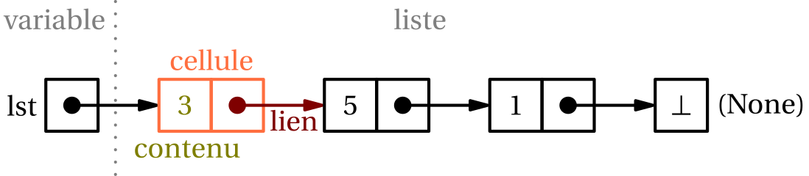
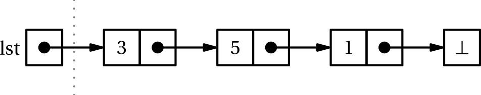

T1.1 Listes chaînées⚓︎
1.1.1 Retour sur les tableaux⚓︎
Dans une structure de tableau (array en anglais), les données (ou une référence vers les données) sont organisées de manière séquentielle en mémoire, où chaque élément (ou référence) est de même type. On peut donc calculer la position de l’élément (ou de la référence) en mémoire en fonction de son numéro d’ordre dans la séquence.
En règle générale, la taille du tableau est connue à la déclaration. Dans ce cas, on ne peut pas ajouter d’élément au delà de la dernière case prévue.

Quelques propriétés des tableaux :
- création d'un tableau de taille donnée
- accès à un élément à partir de son indice en temps constant (\(O(1)\))
- modification d’un élément à partir de son indice en temps constant (\(O(1)\))
En revanche, l'insertion d'un élément dans le tableau impose de décaler tous les élements d'un indice, elle se fait donc en temps linéaire, soit \(O(n)\)...
1.1.2 Liste chaînée⚓︎

Avec une structure de liste (chaînée), on représente à nouveau une séquence d'éléments (à nouveau le plus souvent homogènes), mais les données ne sont pas nécessairement séquentielles en mémoire. On dispose en revanche d'un moyen permettant de passer d'un élément au suivant, d'où le terme chaîné.
Chaque élément est donc stocké dans un bloc mémoire avec une deuxième information: l'adresse de l'élément suivant. On parle de maillon ou cellule (ou encore node) pour désigner ces blocs.

On peut généralement ajouter de nouveaux éléments pour augmenter la taille de la structure dynamiquement.
Et finalement, une liste chaînée est soit vide, soit n'est qu'un lien vers une cellule, qui contient une valeur et un lien vers une cellule, qui est soit vide, soit n'est qu'un lien vers une cellule, qui contient une valeur et un lien vers une cellule, qui... On parle donc de définition récursive d'une liste chaînée.
Interface
On dispose (ou souhaite disposer) sur une liste chaînée des méthodes/primitives suivantes:
- construire une liste vide, souvent nommée
nil - déterminer si la liste est vide (
est_vide,is_empty) - insérer un élément en tête de liste (
insert) - récupérer l'élément en tête de liste (
tete,head) - récupérer la liste privée de son premier élément, appelée la queue (
queue,tail)
Ces opérations doivent être réalisées en temps constant, soit en \(O(1)\).

Accès à un élément
Pour accéder à un élément quelconque, il faut parcourir toute la liste jusqu'à trouver l'élément: le temps d'accès est linéaire, c'est-à-dire proportionnel à la taille de la liste (en \(O(n)\)) et donc non constant.
1.1.3 Implémentation d'une liste chaînée⚓︎
On va donc implémenter deux classes Cellule et Liste qui nous permettront de respecter l'interface demandée, ainsi qu'une fonction construire et la constante nil représentant la liste vide.
Implémentation
On ne définit la méthode spéciale __str__ uniquement pour vérifier et afficher de façon pratique la liste.
1 2 3 4 5 6 7 8 9 10 11 12 13 14 15 16 17 18 19 20 21 22 23 24 25 26 27 28 29 30 | |
Il est important de bien séparer les deux classes Liste et Cellule, car l'attribut pointeur d’une cellule n’est pas une cellule mais bien une liste, c’est-à-dire, sur le schéma, un lien vers une cellule.

1.1.4 Exercices⚓︎
Exercice 1
Utiliser la fonction construire pour créer la liste lst de l'exemple:
Vous devez avoir ensuite:
>>> print(l)
3 -> 5 -> 1
>>> l.tete()
3
>>> l.queue()
<__main__.Liste object at 0x...>
>>> print(l.queue())
5 -> 1
>>> l.queue().tete()
5
>>> l.queue().queue().tete()
1
l = construire(3, construire(5, construire(1,nil)))
Exercice 2
Écrire une fonction longueur qui renvoie la longueur d'une liste en paramètre (ou ajouter la méthode spéciale __len__ à la classe Liste)
Quelle est la complexité de cette fonction?
def __len__(self):
n = 0
while not self.est_vide():
n += 1
self = self.queue()
return n
Exercice 3
Ajouter la méthode insert à la classe Liste, qui insère une valeur en tête de liste.
1 2 3 4 | |
Exercice 4
Écrire une fonction conversion qui prend en paramètre un tableau/liste (de type list de Python) et le convertit en liste chaînée (de type Liste).
| Exemple d'utilisation | |
|---|---|
1 2 3 4 5 6 | |
La définition d'une liste chaînée est récursive...
1 2 3 4 5 6 7 8 | |
Exercice 5
Écrire les fonctions suivantes (récursivement si possible):
concatener(lst1, lst2): fonction qui opère une concaténation de deux listes, c'est-à-dire les mettre bout à bout.nieme(lst, n): fonction qui renvoie le n-ième élément de la liste (sashant que la tête est le «0-ième»).occurences(x, lst): fonction qui renvoie le nombre d'occurences de la valeurxdanslst.
Quelle est la complexité de ces fonctions?
1 2 3 4 5 6 7 8 9 10 11 12 13 14 15 16 17 18 19 20 21 22 23 24 25 26 27 28 29 30 31 32 33 | |
- La fonction
concatenera un coût en \(O(n)\) où \(n\) est la longueur de la listel1. En revanche, la longueur de la listel2n'a pas d'importance. - et 3. : les fonctions
niemeetoccurencesdoivent parcourir la liste, donc sont de complexité linéaire, c'est-à-dire en \(O(n)\) où \(n\) est la longueur de la liste.